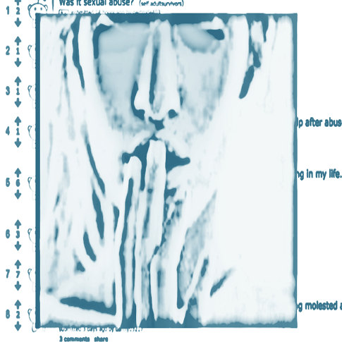

haimson@umich.edu
haimson@umich.edu @oliverhaimson
@oliverhaimson Oliver Haimson
Oliver Haimson Oliver Haimson
Oliver HaimsonOnline spaces and sensitive populations
|
Online spaces can be important platforms for people from sensitive, stigmatized, and vulnerable
populations to discuss their problems and find support; yet platform design decisions impact
how people present themselves and interact with others. By studying these groups' online
self-presentation and disclosure practices, along with the politics of social media platform
design, we can understand how to design technology to better support those facing difficult
issues like sexual abuse, relationship breakups, eating disorders, depression, and gender
presentation.
Selected PublicationsThe Language of LGBTQ+ Minority Stress Experiences on Social Media Koustuv Saha, Sang Chan Kim, Manikanta D. Reddy, Albert J. Carter, Eva Sharma, Oliver L. Haimson, Munmun De Choudhury Proceedings of the ACM Human Computer Interaction (PACM HCI), 3(CSCW), Article 89, November 2019, 21 pages (to be presented at CSCW 2019) [acceptance rate: 31%] [link] [PDF]
How to Do Better with Gender on Surveys: A Guide for HCI Researchers
Social Support, Reciprocity, and Anonymity in Responses to Sexual Abuse Disclosures on Social Media
“Genderfluid” or “Attack Helicopter”: Responsible HCI Research Practice with
Non-Binary Gender Variation in Online Communities
Class Confessions: Restorative Properties in Online Experiences of Socioeconomic Stigma
Baking Gender Into Social Media Design: How Platforms Shape Categories for Users
and Advertisers
Constructing and Enforcing "Authentic" Identity Online: Facebook, Real Names, and
Non-Normative Identities
Understanding Social Media Disclosures of Sexual Abuse Through the Lenses of Support Seeking and
Anonymity
“Hunger Hurts but Starving Works:” Characterizing the Presentation of Eating Disorders
Online
 |